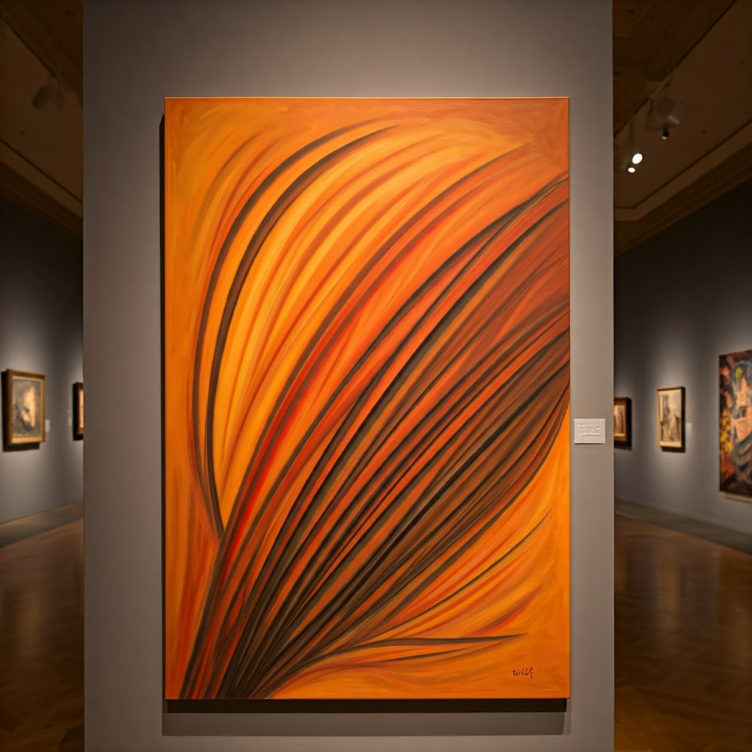

1. Energía en movimiento
Esta obra abstracta utiliza tonos naranjas, amarillos y negros para crear una sensación de movimiento. Las líneas curvas parecen extenderse por el lienzo y transmiten fuerza, dinamismo y calor.
Estilo: Arte abstracto.